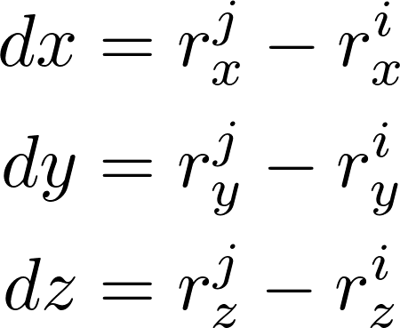
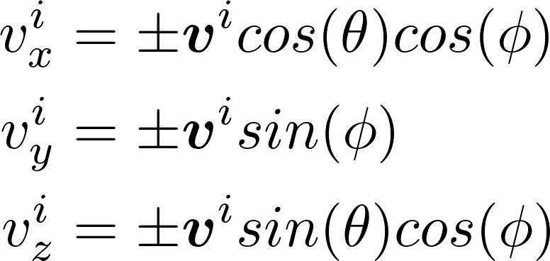
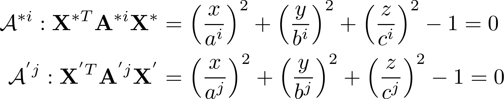
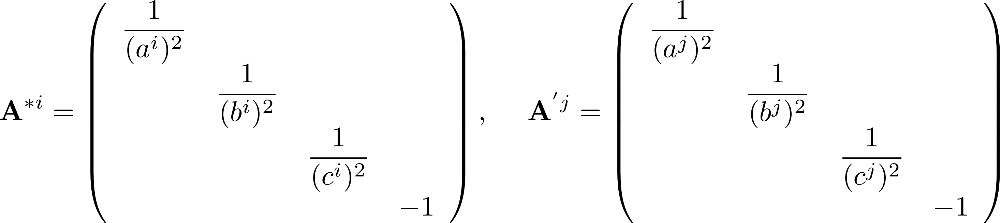
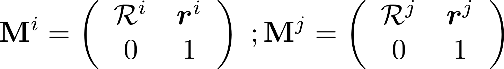
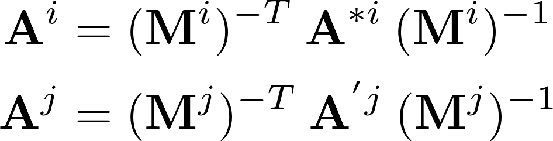
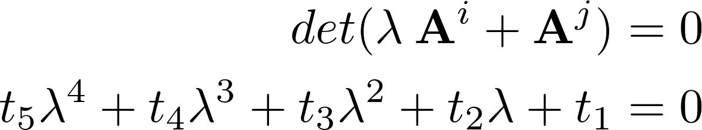
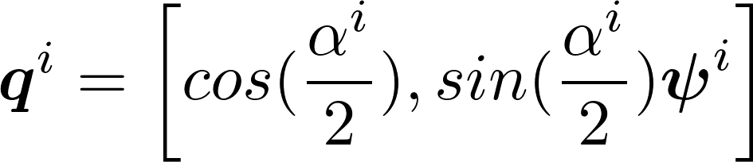

Code documentation¶
Module collision_detect_react¶
-
kanapy.collision_detect_react.collision_react(E1, E2)[source]¶ Evaluates and modifies the magnitude and direction of the ellipsoid’s velocity after collision.
- Parameters
E1 (object
Ellipsoid) – Ellipsoid \(i\)E2 (object
Ellipsoid) – Ellipsoid \(j\)
Note
Consider two ellipsoids \(i, j\) at collision. Let them occupy certain positions in space defined by the position vectors \(\mathbf{r}^{i}, \mathbf{r}^{j}\) and have certain velocities represented by \(\mathbf{v}^{i}, \mathbf{v}^{j}\) respectively. The objective is to find the velocity vectors after collision. The elevation angle \(\phi\) between the ellipsoids is determined by,

where \(dx, dy, dz\) are defined as the distance between the two ellipsoid centers along \(x, y, z\) directions given by,
Depending on the magnitudes of \(dx, dz\) as projected on the \(x-z\) plane, the angle \(\Theta\) is computed. The angles \(\Theta\) and \(\phi\) determine the in-plane and out-of-plane directions along which the ellipsoid \(i\) would bounce back after collision. Thus, the updated velocity vector components along the \(x, y, z\) directions are determined by,

{kind=link}
{kind=link}
-
kanapy.collision_detect_react.collision_routine(E1, E2)[source]¶ Calls the c++ method
kanapy.base.collideDetect()to determine whether the given two ellipsoid objects overlap using the Algebraic separation condition developed by W. Wang et al. A detailed description is provided therein.Also calls the
collision_react()to evaluate the response after collision.- Parameters
E1 (object
Ellipsoid) – Ellipsoid \(i\)E2 (object
Ellipsoid) – Ellipsoid \(j\)
Note
If both the particles to be tested for overlap are spheres, then the bounding sphere hierarchy is sufficient to determine whether they overlap.
Else, if either of them is an ellipsoid, then their coefficients, positions & rotation matrices are used to determine whether they overlap.
Pybind11 plugin¶
The lightweight header-only library pybind11 is used to create Python bindings for the code written in C++. The function can be complied individually using the command documented here.
-
kanapy.base.collideDetect(arg0: numpy.ndarray[float32[m, n]], arg1: numpy.ndarray[float32[m, n]], arg2: numpy.ndarray[float32[m, n]], arg3: numpy.ndarray[float32[m, n]], arg4: numpy.ndarray[float32[m, n]], arg5: numpy.ndarray[float32[m, n]]) → bool¶ C++ implementation of Algebraic separation condition developed by W. Wang et al. 2001 for overlap detection between two static ellipsoids.
- Parameters
arg0 (numpy array) – Coefficients of ellipsoid \(i\)
arg1 (numpy array) – Coefficients of ellipsoid \(j\)
arg2 (numpy array) – Position of ellipsoid \(i\)
arg3 (numpy array) – Position of ellipsoid \(j\)
arg4 (numpy array) – Rotation matrix of ellipsoid \(i\)
arg5 (numpy array) – Rotation matrix of ellipsoid \(j\)
- Returns
True if ellipoids \(i, j\) overlap, else False
- Return type
boolean
Note
Ellipsoids in their standard form in their local coordinate systems are given by,
where \(a^i, a^j\) are the semi-major axis lengths, \(b^i, b^j\) and \(c^i, c^j\) are the semi-minor axes lengths. \(\mathbf{A}^{*i}\) and \(\mathbf{A}^{'j}\) in matrix form is given by,
The transformation from local coordinate systems \(\mathbf{e}_1^{*}\mathbf{e}_2^{*}\mathbf{e}_3^{*}\) and \(\mathbf{e}_1^{'}\mathbf{e}_2^{'}\mathbf{e}_3^{'}\) to global coordinate system \(\mathbf{E}_1\mathbf{E}_2\mathbf{E}_3\) is represented by, \(\mathbf{X} = \mathbf{M}^{i} \:\mathbf{X}^{*}\) and \(\mathbf{X} = \mathbf{M}^{j} \:\mathbf{X}^{'}\)
where \(\mathbf{M}^{i}\) and \(\mathbf{M}^{j}\) are transformation matrices that contain both rotation and translation components.
The equation of ellipsoids in global coordinate system is now given as: \(\mathbf{X}^{T} \mathbf{A}^{i} \mathbf{X}\) and \(\mathbf{X}^{T} \mathbf{A}^{j} \mathbf{X}\) where,
The characteristic equation can now be written in the form,
The fourth order polynomial is solved and depending on the nature of the roots obtained the overlap or separation conditions between ellipsoids can be established as described in Overlap detection.
{kind=link}
{kind=link}
{kind=link}
{kind=link}
{kind=link}
Module entities¶
-
class
kanapy.entities.Cuboid(left, top, right, bottom, front, back)[source]¶ Bases:
objectCreates
Cuboidobjects for ellipsoids and Octree sub-branches.- Parameters
left (float) – Bounding box minimum along x
top (float) – Bounding box minimum along y
right (float) – Bounding box maximum along x
bottom (float) – Bounding box maximum along y
front (float) – Bounding box minimum along z
back (float) – Bounding box maximum along z
-
class
kanapy.entities.Ellipsoid(iden, x, y, z, a, b, c, quat)[source]¶ Bases:
objectCreates
Ellipsoidobjects for each ellipsoid generated from input statistics.- Parameters
iden (integer) – ID of the ellipsoid
center (floats) – Position \((x, y, z)\) of the ellipsoid center in the simulation domain
coefficient (floats) – Semi-major and semin-minor axes lengths \((a, b, c)\) of the ellipsoid
quat (numpy array) – Quaternion representing ellipsoid’s axis and tilt angle with respect to the positive x-axis
Note
The orientations of ellipsoid \(i\) in the global coordinate space is defined by its tilt angle and axis vector and expressed in quaternion notation as,
Ellipsoids are initilaized without a value for its velocity, and is later assigned a random value by
kanapy.packing.particle_generator.An empty list for storing voxels belonging to the ellipsoid is initialized.
-
Bbox()[source]¶ Generates the bounding box limits along x, y, z directions using the surface points from
surfacePointsGen()- Return type
numpy array
-
get_cub()[source]¶ Returns the cuboid object of the ellipsoid
- Return type
object of the class
Cuboid
-
gravity_effect(value)[source]¶ Moves the ellipsoid downwards to mimick the effect of gravity acting on it
- Parameters
value (float) – User defined value for downward movement
Note
The
Cuboidobject of the ellipsoid has to be updated everytime it moves
-
growth(factor)[source]¶ Increases the size of the ellipsoid along its axes governed by the user defined value
- Parameters
factor (float) – Parameter that controls the total simulation time
Note
Increment value is determined as the ratio of particle size to the total simulation time
-
move()[source]¶ Moves the ellipsoid by updating its position vector according to Eulerian integration method
Note
The
Cuboidobject of the ellipsoid has to be updated everytime it moves
-
rotationMatrixGen()[source]¶ Evaluates the rotation matrix for the ellipsoid using the quaternion
- Return type
numpy array
-
set_cub()[source]¶ Initializes an object of the class
Cuboidusing the bounding box limits fromBbox()
-
surfacePointsGen()[source]¶ Generates points on the outer surface of the ellipsoid using the rotation matrix from
rotationMatrixGen()- Return type
numpy array
-
wallCollision(sim_box, periodicity)[source]¶ Evaluates whether the ellipsoid collides with the boundaries of the simulation box.
If periodicity is enabled -> Creates duplicates of the ellipsoid on opposite faces of the box
If periodicity is disabled -> Mimicks the bouncing back effect.
- Parameters
sim_box (object of the class
Simulation_Box) – Simulation boxperiodicity (boolean) – Status of periodicity
- Returns
if periodic - ellipsoid duplicates, else None
- Return type
list
Note
The
Cuboidobject of the ellipsoid has to be updated everytime it moves
{kind=link}
-
class
kanapy.entities.Octree(level, cub, particles=[])[source]¶ Bases:
objectCreates
Octreeobjects for tree trunk and its sub-branches.- Parameters
level (int) – Current level of the Octree
cub (object of the class
Cuboid) – Cuboid object of the tree trunk / sub-branchesparticles (list) – Particles within the tree trunk / sub-branches
Note
level is set to zero for the trunk of the Octree.
cub should be entire simulation box for the tree trunk.
particles list contains all the ellipsoids in the simulation domain for the tree trunk.
-
collisionsTest()[source]¶ Tests for collision between all ellipsoids in the particle list of a particular Octree sub-branch
-
subdivide()[source]¶ Divides the given Octree sub-branch into eight further sub-branches and initializes each newly created sub-branch as an
Octreeobject
-
class
kanapy.entities.Simulation_Box(w, h, d)[source]¶ Bases:
objectCreates
Simulation_Boxobjects for the defined simulation domain.- Parameters
w (float) – width
h (float) – height
d (float) – depth of the simulation domain
Module input_output¶
-
kanapy.input_output.RVEcreator(inputFile)[source]¶ Creates an RVE based on user-defined statistics
- Parameters
inputFile (document) – User-defined statistics file for ellipsoid generation.
Note
Input parameters provided by the user in the input file are:
Standard deviation for ellipsoid equivalent diameter (Log-normal distribution)
Mean value of ellipsoid equivalent diameter (Log-normal distribution)
Minimum and Maximum cut-offs for ellipsoid equivalent diameters
Mean value for aspect ratio
Mean value for ellipsoid tilt angles (Normal distribution)
Standard deviation for ellipsoid tilt angles (Normal distribution)
Side dimension of the RVE
Discretization along the RVE sides
Particle, RVE and simulation data are written as JSON files in a folder in the current working directory for later access.
Ellipsoid attributes such as Major, Minor, Equivalent diameters and its tilt angle.
RVE attributes such as RVE (Simulation domain) size, the number of voxels and the voxel resolution.
Simulation attributes such as periodicity and output unit scale (\(mm\) or \(\mu m\)) for ABAQUS .inp file.
Evaluates the grain volume and the grain boundary shared surface area between neighbouring grains and writes them to ‘grainVolumes.csv’ & ‘shared_surfaceArea.csv’ files.
Note
RVE grain information is read from the (.json) files generated by
kanapy.voxelization.voxelizationRoutine().The grain volumes written to the ‘grainVolumes.csv’ file are sorted in ascending order of grain IDs. And the values are written in either \(mm\) or \(\mu m\) scale, as requested by the user in the input file.
The shared surface area written to the ‘shared_surfaceArea.csv’ file are in either \(mm\) or \(\mu m\) scale, as requested by the user in the input file.
-
kanapy.input_output.l1_error_est(**kwargs)[source]¶ Evaluates the L1-error between the particle- and output RVE grain statistics with respect to Major, Minor & Equivalent diameters.
Note
Particle information is read from (.json) file generated by
kanapy.input_output.particleStatGenerator(). And RVE grain information is read from the (.json) files generated bykanapy.voxelization.voxelizationRoutine().The L1-error value is written to the ‘output_statistics.json’ file.
-
kanapy.input_output.particleCreator(inputFile, periodic='True', units='mm')[source]¶ Generates ellipsoid particles based on user-defined inputs.
- Parameters
inputFile (document) – User-defined grain informationfile for ellipsoid generation.
Note
Input parameters provided by the user in the input file are:
Grain major diameter (\(\mu m\))
Grain minor diameter (\(\mu m\))
Grain’s major axis tilt angle (degrees) with respect to the +ve X-axis (horizontal axis)
Other user defined inputs: Periodicity & output units format (\(mm\) or \(\mu m\)). Default values: periodicity=True & units= \(\mu m\).
Particle, RVE and simulation data are written as JSON files in a folder in the current working directory for later access.
Ellipsoid attributes such as Major, Minor, Equivalent diameters and its tilt angle.
RVE attributes such as RVE (Simulation domain) size, the number of voxels and the voxel resolution.
Simulation attributes such as total number of timesteps, periodicity and Output unit scale (\(mm\) or \(\mu m\)) for ABAQUS .inp file.
-
kanapy.input_output.particleStatGenerator(inputFile)[source]¶ Generates ellipsoid size distribution (Log-normal) based on user-defined statistics
- Parameters
inputFile (document) – User-defined statistics file for ellipsoid generation.
Note
Input parameters provided by the user in the input file are:
Standard deviation for ellipsoid equivalent diameter (Normal distribution)
Mean value of ellipsoid equivalent diameter (Normal distribution)
Minimum and Maximum cut-offs for ellipsoid equivalent diameters
Mean value for aspect ratio
Mean value for ellipsoid tilt angles (Normal distribution)
Standard deviation for ellipsoid tilt angles (Normal distribution)
Side dimension of the RVE
Discretization along the RVE sides
Particle, RVE and simulation data are written as JSON files in a folder in the current working directory for later access.
Ellipsoid attributes such as Major, Minor, Equivalent diameters and its tilt angle.
RVE attributes such as RVE (Simulation domain) size, the number of voxels and the voxel resolution.
Simulation attributes such as periodicity and output unit scale (\(mm\) or \(\mu m\)) for ABAQUS .inp file.
-
kanapy.input_output.plot_output_stats()[source]¶ Evaluates particle- and output RVE grain statistics with respect to Major, Minor & Equivalent diameters and plots the distributions
Note
1. Particle information is read from (.json) file generated by
kanapy.input_output.particleStatGenerator(). And RVE grain information is read from the (.json) files generated bykanapy.voxelization.voxelizationRoutine().
-
kanapy.input_output.read_dump(dump_file)[source]¶ Reads the (.dump) file to extract information for voxelization (meshing) routine
- Parameters
dump_file (document) – Contains information of ellipsoids generated in the packing routine.
- Returns
Cuboid object that represents the RVE.
List of ellipsoid objects that represent the grains.
- Return type
Tuple of python objects (
Cuboid,Ellipsoid)
-
kanapy.input_output.write_abaqus_inp()[source]¶ Creates an ABAQUS input file with microstructure morphology information in the form of nodes, elements and element sets.
Note
JSON files generated by
kanapy.voxelization.voxelizationRoutine()are read to generate the ABAQUS (.inp) file. The json files contain:Node ID and its corresponding coordinates
Element ID with its nodal connectivities
Element sets representing grains (Assembly of elements)
The nodal coordinates are written out in \(mm\) or \(\mu m\) scale, as requested by the user in the input file.
-
kanapy.input_output.write_dump(Ellipsoids, sim_box, num_particles)[source]¶ Writes the (.dump) file, which can be read by visualization software OVITO.
- Parameters
Ellipsoids (list) – Contains information of ellipsoids such as its position, axes lengths and tilt angles
sim_box (
Cuboid) – Contains information of the dimensions of the simulation boxnum_particles (int) – Total number of ellipsoids in the simulation box
Note
This function writes (.dump) files containing simulation domain and ellipsoid attribute information.
-
kanapy.input_output.write_output_stat()[source]¶ Evaluates particle- and output RVE grain statistics with respect to Major, Minor & Equivalent diameters for comparison and writes them to ‘output_statistics.json’ file.
Note
Particle information is read from (.json) file generated by
kanapy.input_output.particleStatGenerator(). And RVE grain information is read from the (.json) files generated bykanapy.voxelization.voxelizationRoutine().The particle and grain diameter values are written in either \(mm\) or \(\mu m\) scale, as requested by the user in the input file.
-
kanapy.input_output.write_position_weights(file_num)[source]¶ Reads the (.dump) file to extract information and ouputs the position and weight files for tessellation.
- Parameters
file_num (int) – Simulation time step for which position and weights output.
Note
Applicable only to spherical particles.
The generated ‘sphere_positions.txt’ and ‘sphere_weights.txt’ files can be inputted into NEPER for tessellation and meshing.
The values of positions and weights are written in \(\mu m\) scale only.
Module packing¶
-
kanapy.packing.packingRoutine()[source]¶ The main function that controls the particle packing routine using:
particle_grow()&particle_generator()Note
Particle, RVE and simulation data are read from the JSON files generated by
kanapy.input_output.particleStatGenerator(). They contain the following information:Ellipsoid attributes such as Major, Minor, Equivalent diameters and its tilt angle.
RVE attributes such as RVE (Simulation domain) size, the number of voxels and the voxel resolution.
Simulation attributes such as total number of timesteps and periodicity.
-
kanapy.packing.particle_generator(particle_data, sim_box)[source]¶ Initializes ellipsoids by assigning them random positions and speeds within the simulation box.
- Parameters
particle_data (Python dictionary) – Ellipsoid information such as such as Major, Minor, Equivalent diameters and its tilt angle.
sim_box (
entities.Simulation_Box) – Simulation box representing RVE.
- Returns
Ellipsoids for the packing routine
- Return type
list
-
kanapy.packing.particle_grow(sim_box, Ellipsoids, periodicity, nsteps)[source]¶ Initializes the
entities.Octreeclass and performs recursive subdivision with collision checks and response for the ellipsoids. At each time step of the simulation it increases the size of the ellipsoid by a factor, which depends on the user-defined value for total number of time steps.- Parameters
sim_box (
entities.Simulation_Box) – Simulation box representing RVE.Ellipsoids (list) – Ellipsoids for the packing routine.
periodicity (boolean) – Status of periodicity.
nsteps (int) – Total simulation steps.
Note
kanapy.input_output.write_dump()function is called at each time step of the simulation to write output (.dump) files. By default, periodic images are written to the output file, but this option can be disabled within the function.
Module voxelization¶
-
kanapy.voxelization.assign_voxels_to_ellipsoid(cooDict, Ellipsoids, elmtDict)[source]¶ Determines voxels belonging to each ellipsoid
- Parameters
cooDict (Python dictionary) – Voxel dictionary containing voxel IDs and center coordinates.
Ellipsoids (list) – Ellipsoids from the packing routine.
elmtDict (Python dictionary) – Element dictionary containing element IDs and nodal connectivities.
-
kanapy.voxelization.create_voxels(sim_box, voxNums)[source]¶ Generates voxels inside the defined RVE (Simulation box)
- Parameters
sim_box (
entities.Cuboid) – Simulation box representing RVE dimensionsvoxNums (tuple of int) – Number of voxels along the RVE sides X, Y & Z
- Returns
Node dictionary containing node ID and coordinates.
Element dictionary containing element IDs and nodal connectivities.
Voxel dictionary containing voxel ID and center coordinates.
- Return type
Tuple of Python dictionaries.
-
kanapy.voxelization.points_in_convexHull(Points, hull)[source]¶ Determines whether the given array of points lie inside the convex hull or outside.
- Parameters
Points (numpy array) – Array of points to be tested whether they lie inside the hull or not.
hull (Scipy’s
ConvexHullobject) – Ellipsoid represented by a convex hull created from its outer surface points.
- Returns
Boolean values representing the status. If inside: True, else False
- Return type
numpy array
Assigns shared voxels between ellipsoids to the ellispoid with the closest center.
- Parameters
cooDict (Python dictionary) – Voxel dictionary containing voxel IDs and center coordinates.
Ellipsoids (list) – Ellipsoids from the packing routine.
-
kanapy.voxelization.voxelizationRoutine()[source]¶ The main function that controls the voxelization routine using:
kanapy.input_output.read_dump(),create_voxels(),assign_voxels_to_ellipsoid(),reassign_shared_voxels()Note
The RVE attributes such as RVE (Simulation domain) size, the number of voxels and the voxel resolution is read by loading the JSON file that is generated by
kanapy.input_output.read_dump().The following dictionaries are written as json files into a folder in the current working directory.
Node dictionary containing node IDs and coordinates.
Element dictionary containing element ID and nodal connectivities.
Element set dictionary containing element set ID and group of elements each representing a grain of the RVE.
Module analyze_texture¶
-
kanapy.analyze_texture.checkConfiguration()[source]¶ Evaluates if Kanapy has been configured for texture analysis by reading the ‘PATHS.json’ file if it exists.
-
kanapy.analyze_texture.getGrainNumber(wd)[source]¶ Reads the number of grains generated in the RVE by kanapy’s geometry module. Or requests the user to provide the number, which will be used for reduced orientation evaluation.
- Parameters
wd (String) – Path to the current working directory.
-
kanapy.analyze_texture.getGrainVolume(wd)[source]¶ Reads the grain volume information generated by kanapy’s geometry module. If the file is missing, it requests the user to provide this file, which will be used by the orientation assignment algorithm.
- Parameters
wd (String) – Path to the current working directory.
Reads the grain boundary shared surface area information generated by kanapy’s geometry module. If the file is missing, it requests the user to provide this file, which will be used by the orientation assignment algorithm.
- Parameters
wd (String) – Path to the current working directory.
-
kanapy.analyze_texture.textureReduction(kdict)[source]¶ Reads the grain volume information generated by kanapy’s geometry module. If the file is missing, it requests the user to provide this file, which will be used by the orientation assignment algorithm.
Also calls kanapy’s MATLAB functions to evaluate the ODF reconstruction with/without orientation assignment.
- Parameters
kdict (Python dictionary object) – Key-value pairs of the user specified input to the CLI command:
kanapy reducetexture